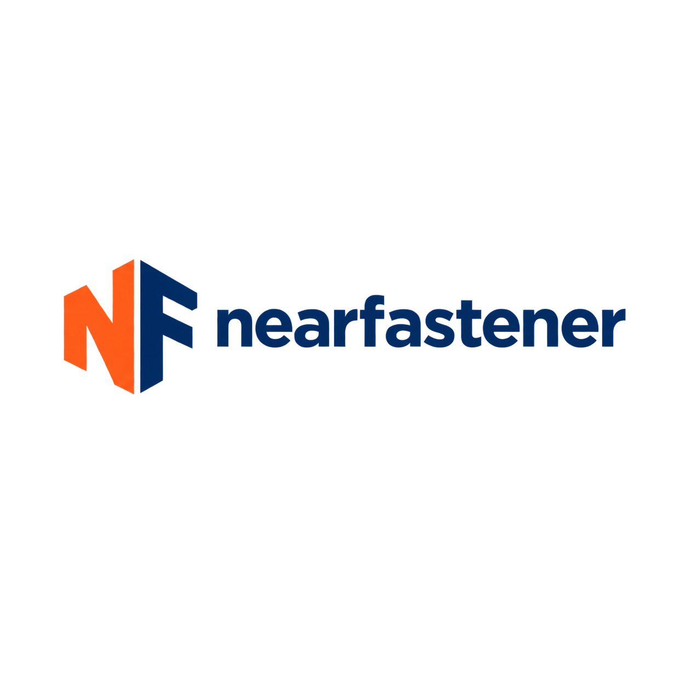
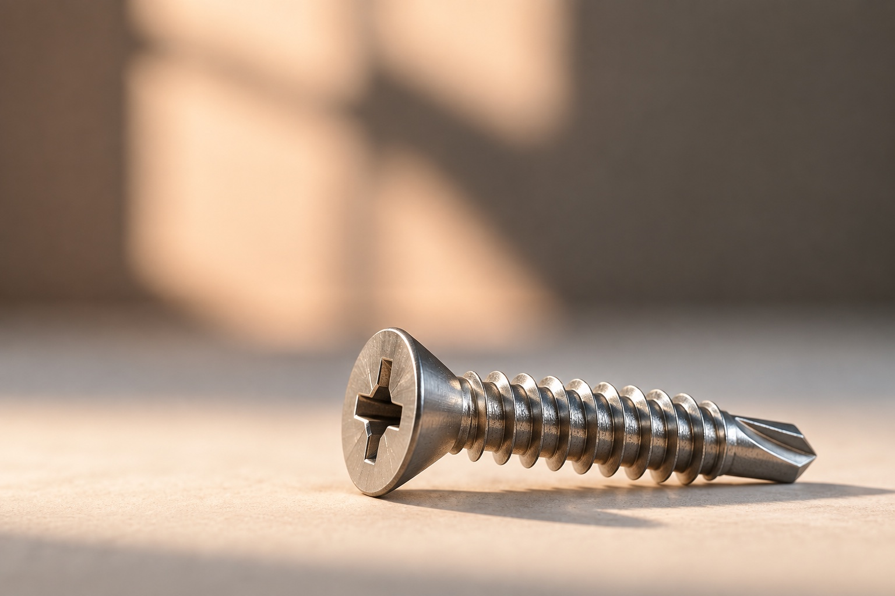
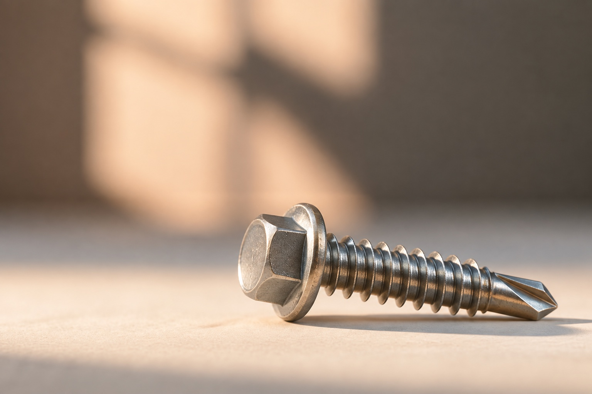

適合する板材の穴あけと締結を行うドリル先端。下地の材質と厚さに合わせて選定します。

図面／仕様
図面または仕様の確認後、製造可否、材質の選択肢、納期を回答します。
お問い合わせには寸法、材質、表面処理、数量、用途をご記載ください。
頭部、駆動部、ねじ、材質、表面処理をご指定ください。見積り前に図面と製造要件を確認します。
OEM組立ラインや継続生産向け。ロット数量、年間需要、検査要件、納入計画をご提示ください。
注文数量、サンプル、検査、納期は案件ごとに協議します。

図面、受入要件、納品情報を準備し、特注締結部品の問い合わせ確認を円滑にします。
見積依頼
入力内容は見積依頼フォームに引き継がれます。